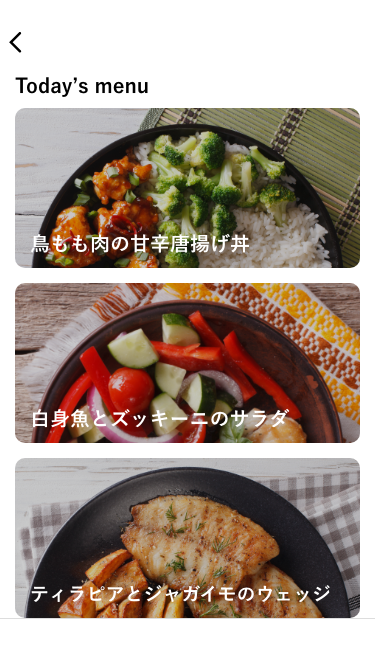

「今日の献立どうしよう」を解決する
３種の献立からお好きなメ
ニューを選択
セール商品を見て、献立を考えるのは多くの時間を浪費しま
す。chopでは、日替わりの３種の献立からお好きなメニュー
を選択するだけ。栄養バランスを考える手間も、店内を動き
回る時間もかかりません。
す。chopでは、日替わりの３種の献立からお好きなメニュー
を選択するだけ。栄養バランスを考える手間も、店内を動き
回る時間もかかりません。